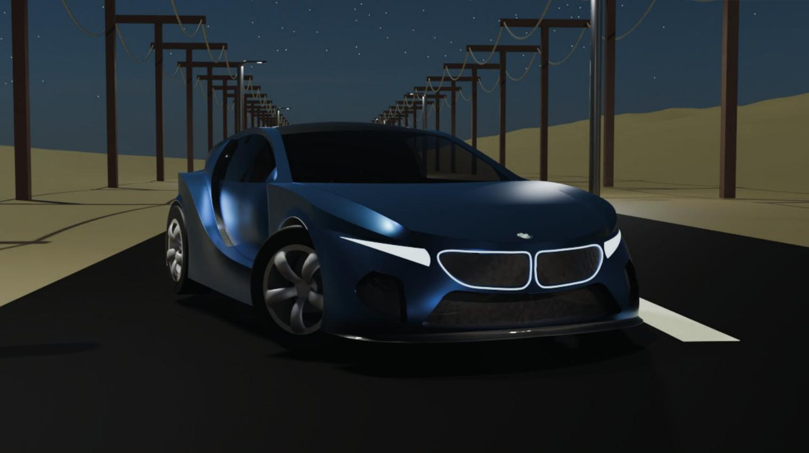

Drag to rotate · pinch or + / − to zoom

- Project
- OVUM G-1
- Context
- SILMO Optical Design Contest
- Year
- 2026
- Tools
- Fusion 360 · generative design
- Material
- Eggshell bioceramic
- Sheet
- 03 / 06
152.76 mmframe width
164.65 mmtemple length
49.25 mmside-view height
Engineered from the Broken
Waste that becomes structure again
Ultralight, circular eyewear frames made from an eggshell-waste bioceramic. Topology optimisation at the critical points with Fusion’s generative design tools.
Form and biomimicry
Less material where there is no stress
The temples follow the logic of trabecular bone and mycelium networks: a strategic removal of material in low-load areas. The result is a stiff, robust part with far less mass.
Material
From shell to frame
Eggshell paste turns organic waste into a structurally sound material. Its natural, textured finish ties the product directly to its biological origin.
Ergonomics and assembly
Fit, lenses and hinges
- Ergonomics
- Wraparound geometry for wider peripheral vision, an optimised nose bridge and ventilation channels.
- Lenses
- Mechanical snap-fit from the base of the frame, no screws: secure retention and quick lens changes.
- Hinges
- They absorb cyclic loads and spread stress evenly across the temples to protect the organic material.
Next project →BMW M6 concept
